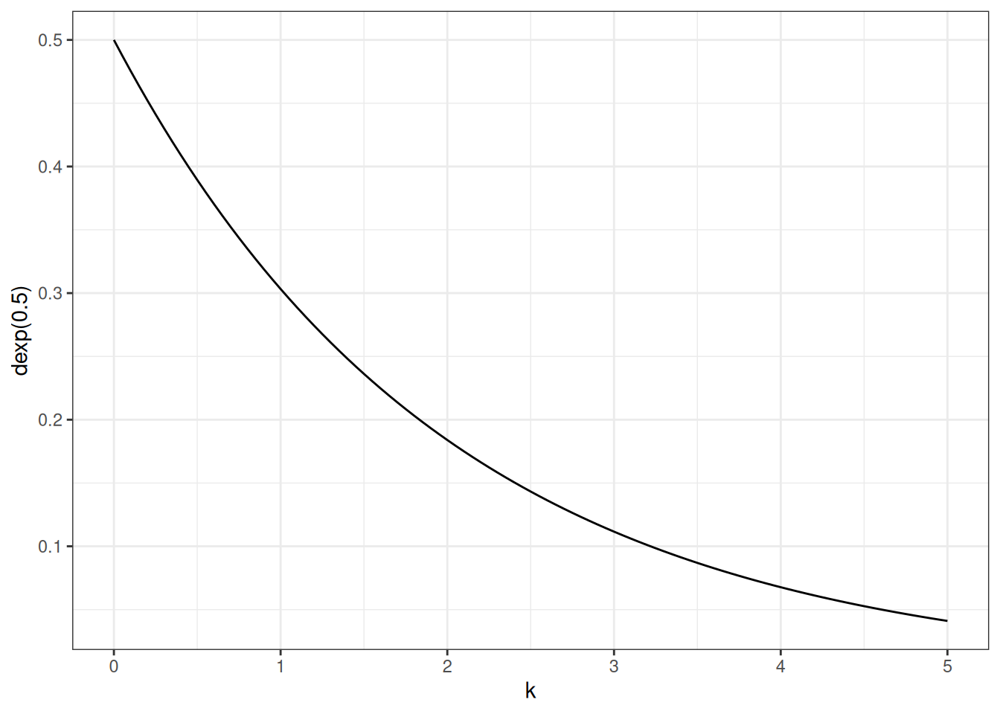

Linear models are additive combinations of variables. They can be used for many applications, and the fit is ok but not ideal. Using linear models is like fitting a square peg in a round hole - it can work but we give up give up scientific information we could use to better inform our statistical analysis.
LMs, GLMs, GLMMs are flexible machines for describing associations. Without an external causal model, linear models have no causal interpretation.
Example: height
The weight of humans is proportional to height. For example, represent humans as a cylinder.
Starting from the equation for the volume of a cylinder:
\(V = \pi r^{2} h\)
Represent the radius as proportion of height
\(V = \pi (ph)^{2} h\)
Finally, the weight depends on the density (k) of the cylinder
\(W = kV = k \pi (ph)^{2} h\)
And simplified, the formula for the expected weight is
\(W = k \pi p^{2}h^{3}\)
This is not a regression model, it is a scientific model that arises from the physical structure of human bodies (assuming human bodies are well approximated by a cylinder).
Statistical model
\(W_{i} \sim Distribution(\mu_{i})\)
\(\mu_{i} = k \pi p^{2} h^{3}\)
\(p \sim Distribution(\)
\(k \sim Distribution()\)
How to set priors? Choose measurement scales and simulate.
Units:
\(\mu_{i}\): kg
\(k\): \(kg/cm^{3}\)
\(h^{3}\)
Measurement scales are social constructs, and it can be easier to divide them out. We can do that by rescaling by, eg. the mean height and weight, resulting in the same data dimensionless. By dividing by the mean, anything larger than 1 is larger than the mean, anything less than 1 is less than the mean.
P is a proportion, therefore between 0-1, in this case < 0.5 because the radius of a body in this population is less than a half of its height.
k is a density, a positive real number > 1. Beta distribution is for proportions,
Weight is a positive real, variance scales with the mean. Growth is multiplicative, log-normal is natural choice.
LogNormal is parameterized using the mu and sigma: mu in log-normal is mean of log, not mean of observed. Therefore, when we model we need to exponentiate mu because the formula corresponds to weight on the natural scale.
ggplot()+stat_function(fun =dexp, args =list(rate =0.5))+xlim(0, 5)+labs(x ='k', y ='dexp(0.5)')

DT<-data_Howell()form<-bf(scale_weight_div_mean~log(k*3.1415*p^2*scale_height_div_mean^3),p~1,k~1, nl =TRUE)get_prior(form, data =DT, family ='lognormal')
prior class coef group resp dpar nlpar lb ub source
student_t(3, 0, 2.5) sigma 0 default
(flat) b k default
(flat) b Intercept k (vectorized)
(flat) b p default
(flat) b Intercept p (vectorized)
tar_load(m_l19_nl_howell)m_l19_nl_howell$prior
prior class coef group resp dpar nlpar lb ub source
exponential(0.5) b k 0 user
exponential(0.5) b Intercept k 0 (vectorized)
beta(25, 50) b p 0 1 user
beta(25, 50) b Intercept p 0 1 (vectorized)
exponential(1) sigma 0 user
m_l19_nl_howell
Family: lognormal
Links: mu = identity; sigma = identity
Formula: scale_weight_div_mean ~ log(k * 3.1415 * p^2 * scale_height_div_mean^3)
p ~ 1
k ~ 1
Data: data_Howell() (Number of observations: 544)
Draws: 4 chains, each with iter = 2000; warmup = 1000; thin = 1;
total post-warmup draws = 4000
Regression Coefficients:
Estimate Est.Error l-95% CI u-95% CI Rhat Bulk_ESS Tail_ESS
p_Intercept 0.34 0.05 0.25 0.45 1.00 950 1248
k_Intercept 2.76 0.92 1.51 4.96 1.00 949 1264
Further Distributional Parameters:
Estimate Est.Error l-95% CI u-95% CI Rhat Bulk_ESS Tail_ESS
sigma 0.21 0.01 0.19 0.22 1.00 1358 1280
Draws were sampled using sampling(NUTS). For each parameter, Bulk_ESS
and Tail_ESS are effective sample size measures, and Rhat is the potential
scale reduction factor on split chains (at convergence, Rhat = 1).
pred<-add_predicted_draws(m_l19_nl_howell, newdata =data.frame(scale_height_div_mean =seq(0, 1.3, 0.01)))ggplot(pred, aes(scale_height_div_mean, .prediction))+stat_lineribbon()+geom_point(aes(scale_height_div_mean, scale_weight_div_mean), data =DT)+scale_fill_grey(start =0.8, end =0.5)+labs(x ='Height (scaled)', y ='Weight (scaled)')
Models using scientific structure can be easier to tune, because differences from prediction error are more closely tied to the problem at hand, rather than geocentric type models.
The posterior shows that the relationship between k and p is a negative curve where as k increases the values for p decrease. The model has identified a mathematical function in our formula, that could be used directly instead of including these parameters in the model.
ggplot(as_draws_df(m_l19_nl_howell))+geom_point(aes(b_k_Intercept, b_p_Intercept))+labs(x ='k', y ='p')
Taking an example individual with scaled height = 1 and scaled weight = 1, we can solve for k.
\(\mu_{i} = k \pi p^{2} h^{3}\)
\((1) = k \pi p^{2} (1)^{3}\)
\(k = \frac{1}{\pi p^{2}}\)
This is the relationship show in the graph above.
Further, given:
\((1) = k \pi p^{2} (1)^{3}\)
Subbing in the expression for k above, we get:
\((1) = \pi \theta (1)^{3}\)
\(\theta\) is used to represent \(k p^2\) and therefore it must be
\(\theta \approx \pi^{-1}\)
Given this, there are no parameters in the model, it is dimensionless. Restructuring the model without those two parameters, the model returns the same result and, as a bonus, it fits much more efficiently.
prior class coef group resp dpar
(flat) b
(flat) b logscale_height_div_meanE3
student_t(3, 0.1, 2.5) Intercept
exponential(1) sigma
nlpar lb ub source
default
(vectorized)
default
0 user
m_l19_nl_howell_no_dim
Family: lognormal
Links: mu = identity; sigma = identity
Formula: scale_weight_div_mean ~ log(scale_height_div_mean^3)
Data: data_Howell() (Number of observations: 544)
Draws: 4 chains, each with iter = 2000; warmup = 1000; thin = 1;
total post-warmup draws = 4000
Regression Coefficients:
Estimate Est.Error l-95% CI u-95% CI Rhat Bulk_ESS
Intercept -0.07 0.01 -0.08 -0.06 1.00 5244
logscale_height_div_meanE3 0.77 0.01 0.76 0.79 1.00 3663
Tail_ESS
Intercept 3333
logscale_height_div_meanE3 3196
Further Distributional Parameters:
Estimate Est.Error l-95% CI u-95% CI Rhat Bulk_ESS Tail_ESS
sigma 0.13 0.00 0.12 0.13 1.00 3079 2750
Draws were sampled using sampling(NUTS). For each parameter, Bulk_ESS
and Tail_ESS are effective sample size measures, and Rhat is the potential
scale reduction factor on split chains (at convergence, Rhat = 1).
pred_no_dim<-add_predicted_draws(m_l19_nl_howell_no_dim, newdata =data.frame(scale_height_div_mean =seq(0, 1.3, 0.01)))ggplot(pred_no_dim, aes(scale_height_div_mean, .prediction))+stat_lineribbon()+geom_point(aes(scale_height_div_mean, scale_weight_div_mean), data =DT)+scale_fill_grey(start =0.8, end =0.5)+labs(x ='Height (scaled)', y ='Weight (scaled)')
State-based models
What we want is a latent state but what we have is only emissions or behaviours of a latent variable. A misguided approach would be to just analyse this data as if it is a categorical variable, disregarding the difference between the behaviour and the underlying latent state.
This family of models is common in movement, learning, population dynamics, international relations, family planning.
Example: social conformity
Do children copy the majority?
We can’t see the strategy selected, we can only see the choice.
Majority choice is consistent with many strategies:
random color would follow majority 1/3 the time
random demonstrator would follow majority 3/4 the time
random demonstration would follow majority 1/2 the time
Total evidence for majority choice is exaggerated because multiple processes lead to the majority choice beyond a majority preference.
Strategy space:
Majority
Minority
Maverick (unchosen)
Random color (ignore demonstrators)
Follow first (copy the first demonstrator)
This is a state based model. There are three possible observations: unchosen, majority or minority.